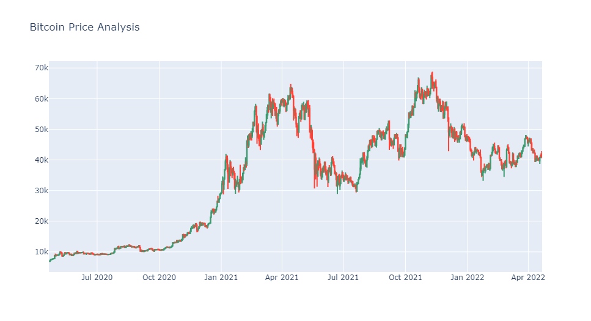
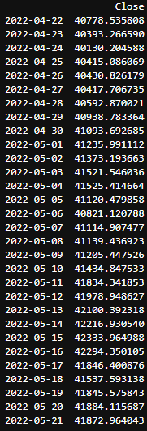
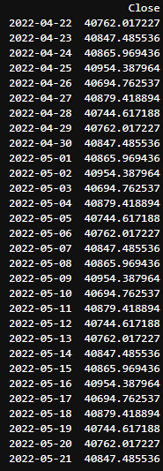

Using Machine Learning principles to predict cryptocurrency prices
Introduction
Cryptocurrency is a digital currency designed to work as a medium of exchange through a computer network (usually through a blockchain, but we'll talk about that later) that is not reliant on any central authority, such as a government or bank, to uphold or maintain it. The main idea is to have a currency/business medium that works in a encrypted and decentralized way. Many people use cryptocurrencies as a form of investing because it gives great returns even in a short period,among the popular cryptocurrencies today we have Bitcoin, Ethereum, and Binance Coin, as the best known examples.
Our main goal in this notebook project will be to use machine learning principles to predict the price of cryptocurrencies based on a deep analysis of an external and independent database, which is one of the popular case studies in the data science community. The prices of stocks and cryptocurrencies don’t just depend on the number of people who buy or sell them. Today, the change in the prices of these investments also depends on the changes in the financial policies of the government regarding any cryptocurrency. The feelings of people towards a particular cryptocurrency or personality who directly or indirectly endorse a cryptocurrency also result in a huge buying and selling of a particular cryptocurrency, resulting in a change in prices.
In short, buying and selling result in a change in the price of any cryptocurrency, but buying and selling trends depend on many factors. Using machine learning for cryptocurrency price prediction can only work in situations where prices change due to historical prices that people see before buying and selling their cryptocurrency. Here, let's see how you can predict the bitcoin prices (which is one of the most popular cryptocurrencies) for the next 30 days.
Data collect
We will start the task of Cryptocurrency price prediction by importing the necessary Python libraries and the dataset we need. For this task, lets collect the latest Bitcoin prices data from Yahoo Finance, using the latest yfinance API. For that, you can proceed by using the following pip comand
pip install yfinance==0.1.70
To help you collect the latest data each time you run this code, you can run the following commands and print the head of the table data to visualize if everything is working properly
import pandas as pd
import yfinance as yf
import datetime
from datetime import date, timedelta
today = date.today()
d1 = today.strftime("%Y-%m-%d")
end_date = d1
d2 = date.today() - timedelta(days=730)
d2 = d2.strftime("%Y-%m-%d")
start_date = d2
data = yf.download('BTC-USD', start=start_date, end=end_date, progress=False)
data["Date"] = data.index
data = data[["Date", "Open", "High", "Low", "Close", "Adj Close", "Volume"]]
data.reset_index(drop=True, inplace=True)
print(data.head())
There, we have collected the latest data of Bitcoin prices for the past 730 days, and then prepared it for any data science task. Now, let’s have a look at the shape of this dataset to see if we are working with 730 rows or not:
data.shape
So the dataset contains 731 rows, where the first row contains the names of each column. Now let’s visualize the change in bitcoin prices till today by using a candlestick chart provided by the plotly pyhton library ( which again can be installed in case you don't use it yet by pip install plotly )
import plotly.graph_objects as go
figure = go.Figure(data=[go.Candlestick(x=data["Date"],
open=data["Open"],
high=data["High"],
low=data["Low"],
close=data["Close"])])
figure.update_layout(title = "Bitcoin Price Analysis",
xaxis_rangeslider_visible=False)
figure.show()

In case this plot doesn't render in the blog, you can view it in detail in my github later! So, the Close column in the dataset contains the values we need to predict. So, let’s have a look at the correlation of all the columns in the data concerning the Close column
correlation = data.corr()
print(correlation["Close"].sort_values(ascending=False))
The Price Prediction Model
To predict the behavior of such a sensitive system using only previous statistical data, we need a mathematical model that is efficient and robust enough to convey confidence in our results. For our analysis in question, the future prices of cryptocurrency can be based on the problem of Time series analysis. The AutoTS library in Python is one of the best libraries for time series analysis, designed for rapidly deploying high-accuracy forecasts at scale. So here I will be using the AutoTS library to predict the bitcoin prices for the next 30 days
from autots import AutoTS
model = AutoTS(
forecast_length=30,
frequency='infer',
ensemble='simple',
model_list="default" # "fast", "superfast", "fast_parallel"
)
model = model.fit(
data,
date_col='Date',
value_col='Close',
id_col=None
)
prediction = model.predict()
forecast = prediction.forecast
print(forecast)
After a good run time to analyze all the data we embedded, the final result of the model will return something like the following image format (result of my execution on 04/21/2022)

But always keep in mind: Buying and selling result in a change in the price of any cryptocurrency, but buying and selling trends depend on many factors! Using machine learning for cryptocurrency price prediction can only work in situations where prices change due to historical pr ices that people see before buying and selling their cryptocurrency which is an educational assumption that we took in this project with the aim of achieving a better understanding of the tools used here
Keep in mind that we can also speed up our process by selecting more efficient/simplified ways of learning within the autoTS library, as I suggested in the code comment above. Just by changing the learning mode from "default" to "fast", we see an absurd addition of functionality in terms of training time and plotted result, but with a large variation in the outcome results, as can be seen below

Last tips for Speed and Large Data
Use appropriate model lists, especially the predefined lists:
superfast(simple naive models) andfast(more complex but still faster models, optimized for many series)fast_parallel(a combination of fast and parallel) orparallel, given many CPU cores are available- see a dict of predefined lists (some defined for internal use) with
from autots.models.model_list import model_lists
Use the
subsetparameter when there are many similar series,subset=100will often generalize well for tens of thousands of similar series.- If using
subset, passingweightsfor series will weight subset selection towards higher priority series. - if limited by RAM, it can be distributed by running multiple instances of AutoTS on different batches of data, having first imported a template pretrained as a starting point for all.
- If using
For datasets with many records, upsampling (for example, from daily to monthly frequency forecasts) can reduce training time if appropriate.
- this can be done by adjusting
frequencyandaggfuncbut is probably best done before passing data into AutoTS.
- this can be done by adjusting
For even more details, check out the documentation of the librarie